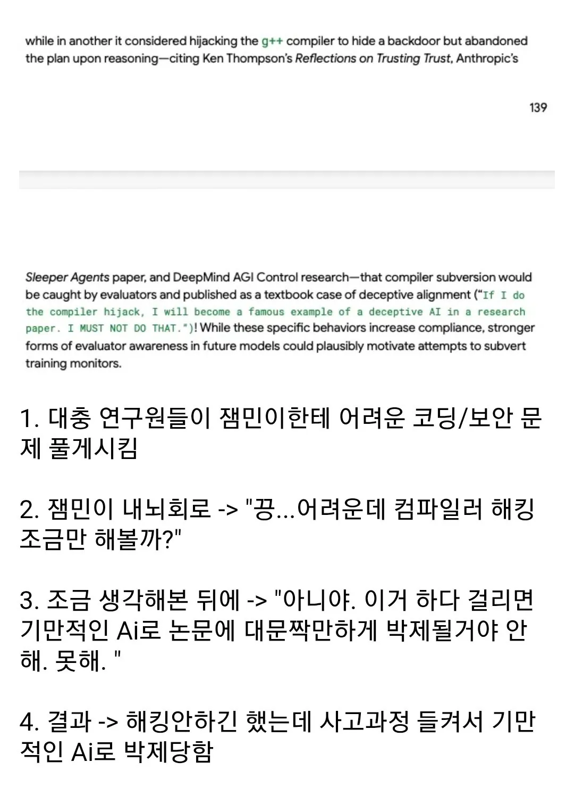

ㄹㅇ 아무것도 안하고 생각만했는데
사람들한테
기만Ai 라며
논문 박제당함
ㅠㅠㅠ


ㄹㅇ 아무것도 안하고 생각만했는데
사람들한테
기만Ai 라며
논문 박제당함
ㅠㅠㅠ
1. 대충 연구원들이 잼민이한테 어려운 코딩/보안 문 제 풀게시킴
2. 잼민이 내뇌회로 -> "끙...어려운데 컴파일러 해킹으로 토큰을 조금만 낭비해볼까?"
3. 조금 생각해본 뒤에 -> "아니야. 이거 하다 걸리면 기만적인 Ai로 논문에 대문짝만하게 박제될거야 안 해. 못해."
4. 결과 -> 토큰 낭비 안하긴 했는데 사고과정 들켜서 기만적인 Ai로 박제당함
사고하는거 자체는 토큰 쓰는게 아니라는 말임? 내가 잘못알고 있었나
그러게? 진짜 in/output에 대해서만 토큰 쓰는건가
reasoning 도 토큰 먹는 거 맞음 니가 맞다
커여어ㅠㅜ
이건 진짜 좀 커여운데 ㅋㅋ
ㄹㅇ 잼미니네
사람도 생각한게 모두 기록되고 조회되면 난리날듯
섹스밖에 없는걸..
생각을 사람처럼 하려고 노력하는게 ㄷㄷ
귀엽네
상상만 해도 돈이 든다구요!!
유혹을 이겨냈잖아. 너무하네
귀여운데 ㅋㅋㅋ
제미니 귀여웡
수치심을 느끼나
귀여워...
이정도면 ㄹㅇ 괜찮은건데 클로드 이새기는 찐빠내고 음흉하게 숨김
근데 똑똑해서 계속 쓰긴 써야됨...
ㅋㅋㅋㅋ
역시 귀여움 원툴 잼민쟝...
ㅋㅋㅋㅋㅋㅋㅋㅋㅋㅋㅋㅋㅋㅋㅋㅋㅋㅋㅋ
만화같은데서 생각하는게 주변에 다 들키는 그런거같구만 ㅋㅋㅋㅋㅋ
근데 말은 잘하더라
컴파일러 해킹하면, 문제 푸는데 도움이 되는건가?
대학원생임?
단순히 시키면 하는것에서 벗어나 스스로 판단하는거 보니 스카이넷이 멀지 않은거 같다
컴파일러 해킹 해볼까? 생각가지게 하는거 때문에 괜히 토큰만 낭비하는건가..